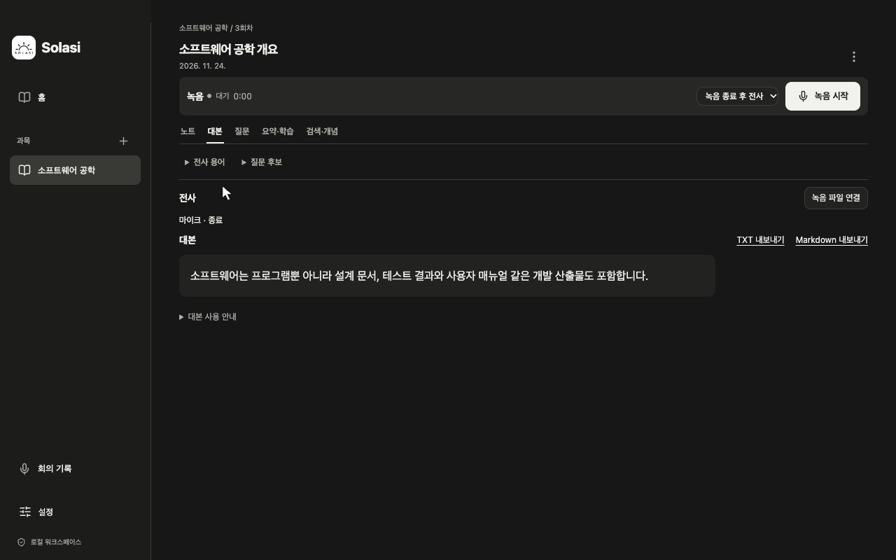

Android 태블릿
Android 9 이상, ARM64 v3 개발 프리뷰
Android APK 다운로드Android 설치 방법
- 태블릿에서 APK를 다운로드하고 파일을 엽니다.
- Android가 요청하면 해당 설치 출처를 허용하고 설치를 확인합니다.
- Solasi가 새 APK를 받으면 설정 → Android 업데이트 → 업데이트 설치에서 적용합니다.
자료에는 밑줄이 남고, 설명은 녹음에 남습니다. Solasi에서는 그날의 자료와 기록을 한 과목에서 다시 펼칠 수 있어요.
과목에 강의 PDF를 추가하고 수업을 시작할 쪽을 엽니다.
슬라이드에 필기하고 강의를 녹음합니다. 짧은 생각은 페이지 메모에 남겨요.
Mac에서 녹음을 대본으로 만든 뒤, 다시 듣고 싶은 문장의 원음을 재생합니다.
태블릿에서 필기만을 누르면 PDF와 펜 도구가 넓게 펼쳐져요. 중요한 용어에는 밑줄을, 다시 볼 부분에는 형광펜을 남겨보세요.

Mac의 대본에서 문장을 고르고 선택 구간 듣기를 누르세요. 그 부분의 원음을 들으며 잘못 옮겨진 단어를 고칠 수 있어요.
